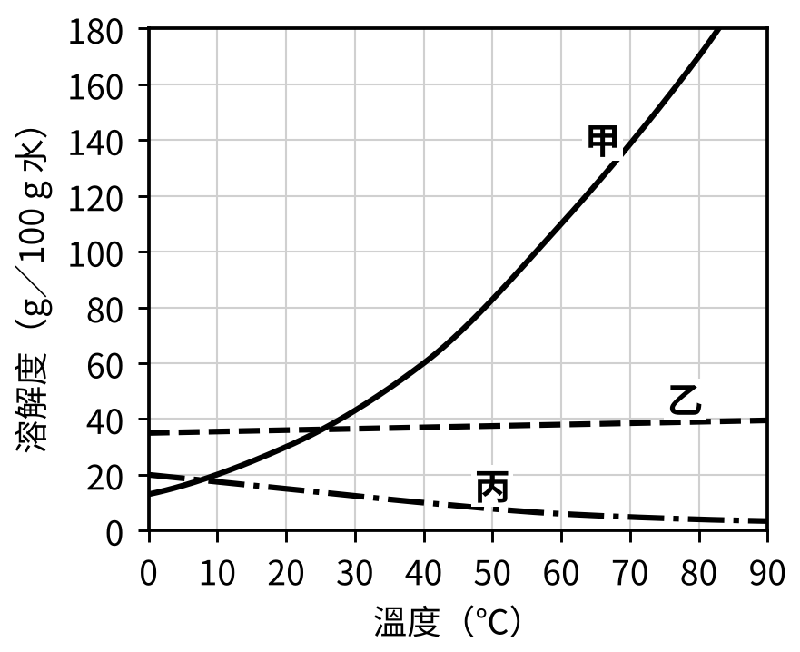
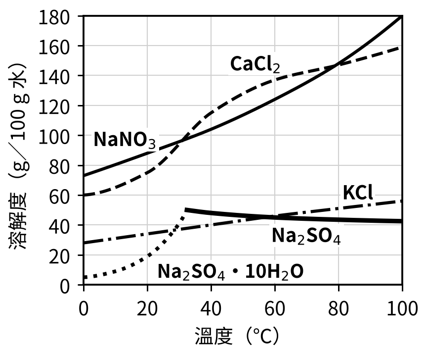
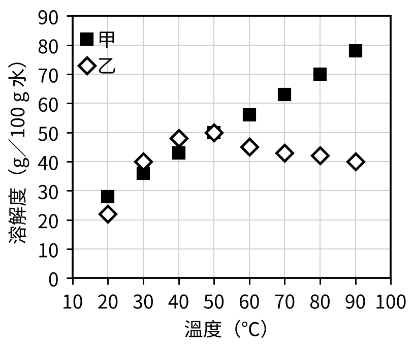
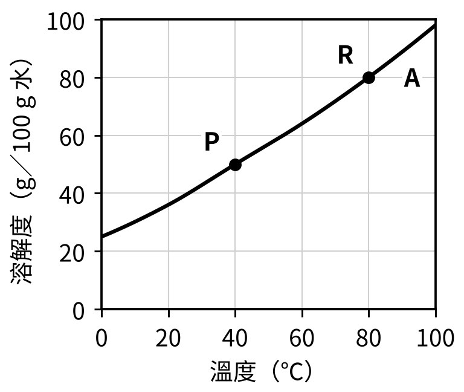
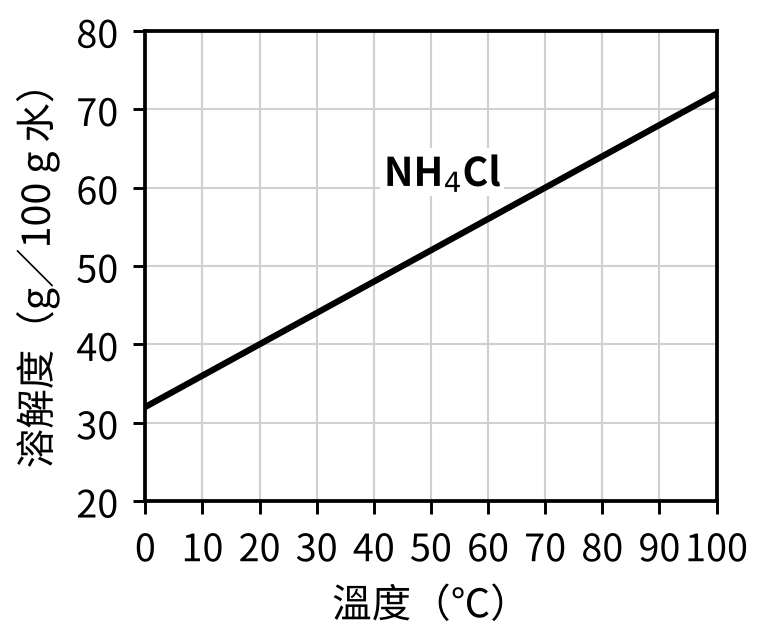
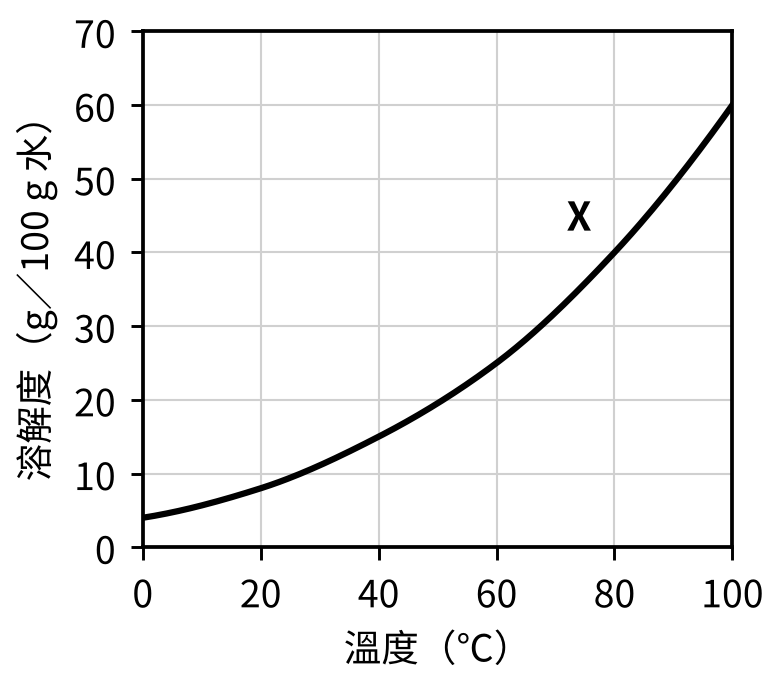

基礎題
下列有關溶解度的敘述，何者正確？
- (A) 攪拌可以增加固體對水的溶解度
- (B) 配製石灰水溶液，完全攪拌後，溶液底部有熟石灰固體存在，則此溶液為過飽和溶液
- (C) 定溫定壓下，某物質的飽和溶液的濃度即為該物質的溶解度
- (D) 氣體在水中的溶解度，均隨溫度升高而增加
- (E) 在過飽和溶液放入晶種，其溶質會全部析出
看答案與詳解
答案：(C)
(B) ✘：底部仍有未溶固體，溶液與固體達溶解平衡，是飽和溶液。
(C) ✔：溶解度就是定溫（定壓）下飽和溶液的濃度。
(D) ✘：氣體溶解度隨溫度升高而減小。
(E) ✘：加入晶種只析出「超過溶解度」的部分，溶液變為飽和，不是全部析出。
在一定溫度下，把一塊正方形的硫酸銅晶體投入硫酸銅飽和溶液裡，隔一段時間後取出（假定溫度及溶劑的質量不變），發現晶體外形改變了。下列有關晶體、溶質與溶液變化的敘述，何者正確？
- (A) 晶體的質量：增加；溶液中溶質的質量：減少；溶液是否飽和：飽和
- (B) 晶體的質量：減少；溶液中溶質的質量：增加；溶液是否飽和：過飽和
- (C) 晶體的質量：不變；溶液中溶質的質量：不變；溶液是否飽和：飽和
- (D) 晶體的質量：增加；溶液中溶質的質量：減少；溶液是否飽和：不飽和
- (E) 晶體的質量：減少；溶液中溶質的質量：不變；溶液是否飽和：不飽和
看答案與詳解
答案：(C)
晶體某些部位溶解、另一些部位析出，所以外形改變，但溶解量＝析出量：
晶體質量不變、溶液中溶質質量不變、溶液仍為飽和，選 (C)。
下列有關溶解度的敘述，哪些正確？（應選 3 項）（多選）
- (A) 溶解速率愈快的鹽，該鹽的溶解度愈高
- (B) 大顆粒的食鹽在水中溶解度比研磨成細小粉末的食鹽來得大
- (C) 氣體在水中的溶解度，隨溫度之升高而減少
- (D) 將固體溶質加入水中，直到容器底部有沉澱時，此時溶液的濃度＝飽和濃度＝溶解度
- (E) CO2(g) 壓力增加，可增加 CO2(g) 在水中的溶解度
看答案與詳解
答案：(C)(D)(E)
(B) ✘ 顆粒大小只影響溶解速率，不影響溶解度。
(C) ✔ 氣體溶解多為放熱，溫度升高溶解度減小。
(D) ✔ 底部有未溶固體表示已達飽和，濃度即該溫度的溶解度。
(E) ✔ 亨利定律：氣體分壓愈大，溶解度愈大。
下列選項哪些敘述正確？（多選）
- (A) 汽油和水不互溶，丙酮和水互溶，溶解度不同是因溶質和溶劑之本性
- (B) 定溫下在均盛有 50 克水的三個燒杯甲、乙、丙中，分別加入 10 克、15 克、20 克的硫酸銅，經充分攪拌後，發現甲杯顏色最淡，而乙、丙二杯仍有固體沉澱，則甲杯是不飽和溶液，乙杯是飽和溶液，丙杯是過飽和溶液
- (C) 承 (B)，若升高相同溫度後，乙、丙二杯尚有固體沉澱，則其濃度相等
- (D) 同壓下，二氧化碳溶於水之溶解度：10℃＜20℃
- (E) 加大壓力，會增加食鹽對水的溶解度
看答案與詳解
答案：(A)(C)
(B) ✘ 丙杯有固體沉澱，是飽和溶液，不是過飽和（過飽和溶液不會有未溶固體）。
(C) ✔ 同溫下兩杯都有剩餘固體 → 都是飽和溶液，濃度相同。
(D) ✘ 氣體溶解度隨溫度升高而降低，10℃＞20℃。
(E) ✘ 壓力對固體溶解度幾乎沒有影響。
20℃ 時某鹽的溶解度為 36 g／100 g 水，則 20℃ 時此鹽飽和水溶液的重量百分率濃度約為多少？
- (A) 26.5%
- (B) 36%
- (C) 56%
- (D) 64%
- (E) 73.5%
看答案與詳解
答案：(A)
36／136×100%≒26.5%
〔易錯〕溶解度的分母是「100 g 水」，重量百分率的分母是「溶液」。
打開汽水瓶蓋時，會看到大量氣泡冒出。最主要的原因為何？
- (A) 瓶內壓力降低，二氧化碳在水中的溶解度變小
- (B) 瓶內溫度升高，二氧化碳在水中的溶解度變小
- (C) 二氧化碳與水反應產生新的氣體
- (D) 開瓶時的搖晃使水蒸發
- (E) 空氣進入瓶中與汽水反應
看答案與詳解
答案：(A)
進階題
▲ 第 4-07～4-09 題為題組：甲、乙、丙三種固體在水中的溶解度曲線如附圖。

60℃ 時，50 g 的水最多可溶解甲多少克？
- (A) 30
- (B) 55
- (C) 60
- (D) 110
- (E) 170
看答案與詳解
答案：(B)
50 g 水最多溶 110×(50／100)＝55 g
取 80℃ 的甲飽和水溶液 135 g，冷卻到 20℃，可析出甲多少克？
- (A) 35
- (B) 70
- (C) 85
- (D) 140
- (E) 155
看答案與詳解
答案：(B)
135 g 飽和溶液 → 水 50 g、甲 85 g。
20℃ 溶解度 30：50 g 水只能溶 15 g。
析出＝85−15＝70 g
根據附圖，下列敘述哪些正確？（多選）
- (A) 甲溶於水為吸熱過程
- (B) 甲中混有少量的乙時，可將混合物溶於熱水後冷卻，讓甲結晶析出來純化
- (C) 40℃ 時，甲飽和水溶液的重量百分率濃度為 60%
- (D) 在甲、乙兩曲線交點所對應的溫度時，兩者飽和水溶液的重量百分率濃度相等
- (E) 將丙的飽和水溶液升高溫度，會變成未飽和溶液
看答案與詳解
答案：(A)(B)(D)
(B) ✔ 甲的溶解度受溫度影響大、乙很小；冷卻時甲大量析出，乙留在溶液中（再結晶）。
(C) ✘ 40℃ 溶解度 60 g／100 g 水 → 60／160＝37.5%。
(D) ✔ 溶解度相同，飽和溶液的重量百分率濃度就相同。
(E) ✘ 丙的溶解度隨溫度升高而減小，升溫後會有丙析出，仍為飽和溶液。
▲ 第 4-10～4-11 題為題組：將碳酸鈉晶體（Na2CO3．10H2O）286 克，置入 714 克蒸餾水中完全溶解時，恰好得到飽和溶液。（式量：Na2CO3＝106，H2O＝18）
此溶液的重量百分率濃度約為多少？
- (A) 40.1%
- (B) 28.6%
- (C) 18.0%
- (D) 14.5%
- (E) 10.6%
看答案與詳解
答案：(E)
溶液質量＝286＋714＝1000 g
重量百分率＝106/1000 × 100%＝10.6%
此溫度下，碳酸鈉（Na2CO3）的溶解度（g／100 g 水）約為多少？
- (A) 11.9
- (B) 14.8
- (C) 18.9
- (D) 28.6
- (E) 40.1
看答案與詳解
答案：(A)
溶解度＝106/894 × 100＝11.9 g／100 g 水
25℃ 時某鹽的溶解度為 40 g／100 g 水。在 25℃ 將 30 g 的該鹽加入 50 g 水中，充分攪拌後，所得「溶液」的質量為多少克？
- (A) 50
- (B) 60
- (C) 70
- (D) 80
- (E) 90
看答案與詳解
答案：(C)
溶液質量＝50＋20＝70 g
已知 KNO3 在水中溶解度於 90℃ 時為 200 克／100 克水，於 10℃ 時為 20 克／100 克水。現在在 90℃ 時取 150 克的飽和溶液，溫度冷卻至 10℃ 時，可析出結晶若干克？
- (A) 45
- (B) 60
- (C) 90
- (D) 100
- (E) 120
看答案與詳解
答案：(C)
150 g 飽和溶液 → KNO3 100 g、水 50 g。
10℃ 時 50 g 水最多溶 20 × 50/100＝10 g → 析出 100−10＝90 g，選 (C)。
〔易錯〕150 g 是「溶液」質量，要先拆成溶質與水。
取 A、B 兩杯溶液，溫度為 80℃ 且等質量的飽和水溶液，其中 A 杯含有甲化合物，B 杯則含有乙化合物。若將兩杯溶液溫度降至 20℃ 後，所析出甲物質的質量比乙的大（若甲和乙均不含結晶水），下列有關甲、乙溶解度的敘述，何者較為正確？
- (A) 在 20℃ 時，乙的溶解度必比甲的大
- (B) 在 80℃ 時，甲的溶解度必比乙的大
- (C) 溫度對乙的溶解度影響較大
- (D) 溫度對甲的溶解度影響較大
- (E) 在 20℃ 時，甲的溶解度必比乙的大
看答案與詳解
答案：(D)
各別溫度下甲、乙的溶解度誰大誰小無法推得，(A)(B)(E) ✘；(C) ✘ 與推論相反。
易錯：析出多 ≠ 溶解度大。
在 20℃ 時，甲、乙兩杯分別有 200 克及 300 克飽和硝酸鉀溶液，兩杯要析出等質量晶體的條件為何？（多選）
- (A) 同時降低溫度至 10℃
- (B) 甲杯降溫至 10℃，乙杯降溫至 6℃
- (C) 甲杯蒸發掉 20 克水，乙杯蒸發掉 30 克水
- (D) 甲、乙兩杯各蒸發掉 20 克水
- (E) 甲杯蒸發後剩 100 克溶液，乙杯蒸發後剩 200 克溶液
看答案與詳解
答案：(D)(E)
(A)(C) ✘ 析出量與溶液量同比例 2：3。
(B) ✘ 乙杯溶液較多又降得更低，析出更多。
(D) ✔ 兩杯都蒸發 20 g 水，析出量相同。
(E) ✔ 兩杯溶液都減少 100 g（蒸發的水＋析出的晶體），而減少量中水與晶體的比例固定 → 蒸發水量相同、析出量相同。
下列有關溶解度測定實驗敘述，哪些正確？（多選）
- (A) 溫度升高，硝酸鉀的溶解度變大，表示硝酸鉀溶於水為吸熱反應
- (B) 加熱時，應使試管液面高於燒杯之液面
- (C) 過濾硝酸鉀的晶體時，應以溫水沖洗晶體，以減少晶體損失
- (D) 應使用秤量紙及天平秤量硝酸鉀重量
- (E) 加熱至 40℃ 時，4 克的硝酸鉀恰好完全溶解在 10 毫升水中，表示其溶解度為 4 克／100 克水
看答案與詳解
答案：(A)(D)
(B) ✘ 水浴加熱時，試管內液面應低於燒杯水面，才能使溶液均勻受熱。
(C) ✘ 溫水會溶解更多硝酸鉀，應用少量冷水沖洗以減少損失。
(D) ✔ 固體藥品以秤量紙盛裝，用天平秤量。
(E) ✘ 10 mL 水≈10 g，4 g／10 g 水＝40 g／100 g 水，不是 4 g。
有五種化合物，其溶解度（每 100 克水中所含溶質的克數）和溫度的關係如附圖。哪一種化合物溶解的過程為放熱？

- (A) NaNO3
- (B) CaCl2
- (C) KCl
- (D) Na2SO4．10H2O
- (E) Na2SO4
看答案與詳解
答案：(E)
圖中只有 Na2SO4（約 32℃ 以上的粗實線）溶解度隨溫度上升而下降，所以它的溶解過程為放熱。
NaNO3、CaCl2、KCl、Na2SO4．10H2O 的溶解度都隨溫度升高而增大，溶解為吸熱。
王同學在不同的溫度分別進行鹽類化合物甲（■）與乙（◆）在水中的溶解度實驗，得到的結果如附圖。已知溶解度定義為每 100 克的水所溶解的化合物質量（克），則下列敘述，哪一項正確？

- (A) 甲的溶解度總是比乙大
- (B) 在攝氏 80 度時，甲的溶解度是乙的兩倍
- (C) 當溶液溫度上升，甲與乙溶解度皆變大
- (D) 在攝氏 50 度時，甲與乙溶解度幾乎相同
- (E) 在攝氏 80 度時，將 20 克的乙溶於 50 克的水中，將此溶液溫度緩慢降低至攝氏 50 度，溶液中會出現化合物乙結晶
看答案與詳解
答案：(D)
(B) ✘ 80℃ 時甲約 70、乙約 42，不是兩倍。
(C) ✘ 乙在 50℃ 以上溶解度隨溫度上升而下降。
(D) ✔ 50℃ 時兩者皆約 50 g／100 g 水。
(E) ✘ 乙在 50℃ 溶解度約 50 → 50 g 水可溶 25 g＞20 g；且由 80℃ 降到 50℃ 乙的溶解度變大，溶液更不飽和，不會析出。
物質 A 在水中的溶解度曲線如附圖。100 克 A 的飽和溶液由 80℃ 降溫到 40℃，有多少克 A 析出？

- (A) 30
- (B) 28.5
- (C) 20.6
- (D) 18
- (E) 16.7
看答案與詳解
答案：(E)
80℃ 飽和溶液 180 g（含 A 80 g、水 100 g）降到 40℃ 析出 80－50＝30 g。
100 g 飽和溶液按比例：30×100/180＝16.7 g
驗算：100 g 溶液含 A 44.4 g、水 55.6 g；40℃ 時 55.6 g 水可溶 27.8 g，析出 44.4－27.8＝16.7 g ✓
小奇做硝酸鉀溶解度的測定：在試管中放入 4.0 g 硝酸鉀與 5.0 g 水，加熱到完全溶解後慢慢冷卻，在 48℃ 時開始出現晶體；接著再加入 5.0 g 水，重複同樣的步驟，在 24℃ 時開始出現晶體。
(1) 硝酸鉀在 48℃ 與 24℃ 的溶解度各為多少 g／100 g 水？
(2) 硝酸鉀溶於水是吸熱還是放熱？
看答案與詳解
答案：(1) 48℃：80；24℃：40 (2) 吸熱
(1) 48℃：4.0 g 溶於 5.0 g 水 → 4.0×(100／5.0)＝80 g／100 g 水
24℃：4.0 g 溶於 10.0 g 水 → 40 g／100 g 水
(2) 溫度愈高溶解度愈大 → 溶解時吸熱。
▲ 第 4-21～4-22 題為題組：不同溫度下，氯化銨（NH4Cl）在水中的溶解度曲線如附圖。

20℃ 時，重量百分率濃度 10% 的 NH4Cl 水溶液 200 克，需再溶解多少克的 NH4Cl，才可成為飽和溶液？
- (A) 22
- (B) 33
- (C) 43
- (D) 52
- (E) 60
看答案與詳解
答案：(D)
200 g 溶液含 NH4Cl 20 g、水 180 g
180 g 水飽和可溶 180 × 40／100 = 72 g
需再溶 72 − 20 = 52 g
取 70℃ 的飽和氯化銨溶液 320 克，降溫至 20℃ 時，可析出氯化銨多少克？
- (A) 20
- (B) 30
- (C) 40
- (D) 50
- (E) 無法析出
看答案與詳解
答案：(C)
70℃ 飽和溶液 160 g 含水 100 g → 320 g 含水 200 g、NH4Cl 120 g
20℃ 時 200 g 水只能溶 80 g
析出 120 − 80 = 40 g
大考／素養題
夏天午後，養殖池裡的魚常浮到水面張口呼吸（俗稱「浮頭」）。下列哪一項是最主要的原因？
- (A) 水溫升高，氧氣在水中的溶解度變小
- (B) 水溫升高，氧氣在水中的溶解度變大
- (C) 日照使水分蒸發，池水的鹽度變低
- (D) 氣壓升高，氧氣在水中的溶解度變小
- (E) 水溫升高使水的密度變大
看答案與詳解
答案：(A)
20℃ 時某無水鹽的溶解度為 25 g／100 g 水。取 20℃ 的該鹽飽和水溶液 200 g，蒸發掉 40 g 的水後再回到 20℃，可析出該鹽多少克？（該鹽析出時不含結晶水）
- (A) 5
- (B) 8
- (C) 10
- (D) 20
- (E) 25
看答案與詳解
答案：(C)
40 g 水可溶 25×(40／100)＝10 g → 析出 10 g
固體 X 在水中的溶解度與溫度的關係如附圖。下列敘述哪些正確？（多選）

- (A) 固體 X 溶於水為放熱反應
- (B) 80℃ 時，固體 X 的飽和溶液之重量百分率濃度為 40%
- (C) 於 80℃ 時，取 20% 的 X 溶液 200 克若溫度維持在 80℃，至少需再加入 24 克的 X，方可使溶液達飽和
- (D) 將原 20% 的 X 溶液降溫至 60℃，亦可使溶液達飽和
- (E) 將原 20% 的 X 溶液 200 克降溫至 40℃ 時，可析出 X 晶體 16 克
看答案與詳解
答案：(C)(D)(E)
(A) ✘ 溶解度隨溫度上升而增大 → 溶解為吸熱。
(B) ✘ 40／(100＋40)＝28.6%。
20% 溶液 200 g＝40 g X＋160 g 水：
(C) ✔ 80℃ 時 160 g 水可溶 160×0.40＝64 g，需再加 64−40＝24 g。
(D) ✔ 40／160＝25／100，恰為 60℃ 的溶解度 → 降溫至 60℃ 達飽和。
(E) ✔ 40℃ 時 160 g 水可溶 160×0.15＝24 g → 析出 40−24＝16 g。
32℃ 時，有一 BaCl2 未飽和澄清溶液 584 克，將此澄清溶液等分為甲、乙兩杯，然後對甲、乙兩杯溶液分別做加熱處理，其過程與結果如下：
實驗一：加熱甲杯，使溶液蒸發掉 10 克水，隨即將溶液回復至 32℃，發現有 2 克 BaCl2 結晶析出。
實驗二：加熱乙杯，使溶液蒸發掉 30 克水，隨即將溶液回復至 32℃，發現有 10 克 BaCl2 結晶析出。
則 32℃ 時，BaCl2 對水的溶解度（克／100 克水）為若干？
- (A) 50
- (B) 40
- (C) 30
- (D) 20
- (E) 10
看答案與詳解
答案：(B)
驗算：每杯 292 g，設含溶質 x g：(x−2)／(292−x−10)＝0.4 → x＝82；乙杯 (82−10)／(292−82−30)＝72／180＝0.4 ✔。
原溶液未飽和，第一次蒸發的 10 g 水有一部分只是讓溶液「變飽和」，不能直接用 2／10 計算。
80℃ 時將 100 克的水中溶解無水硫酸銅使成飽和溶液，若將其冷卻至 25℃ 應有 CuSO4．5H2O 若干克析出？已知無水硫酸銅之溶解度：80℃ 時 56 克／100 克水，25℃ 時 22 克／100 克水（Cu＝64，S＝32，O＝16，H＝1）
- (A) 45 克
- (B) 39 克
- (C) 25 克
- (D) 18 克
- (E) 61 克
看答案與詳解
答案：(E)
80℃ 飽和液含 CuSO4 56 g、水 100 g。設析出 x g 晶體，剩餘溶液在 25℃ 為飽和：
(56−0.64x)／(100−0.36x)＝22／100 → 5600−64x＝2200−7.92x → x≈60.6≈61 g。
含結晶水析出時，晶體也帶走水，分母要扣 0.36x；忘了扣會得 (56−22)／0.64≈53，不在選項中。